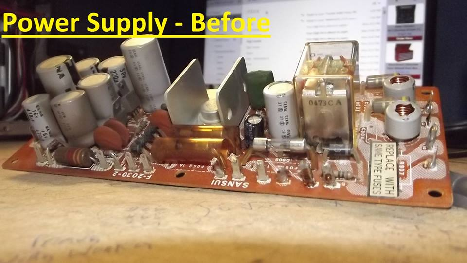
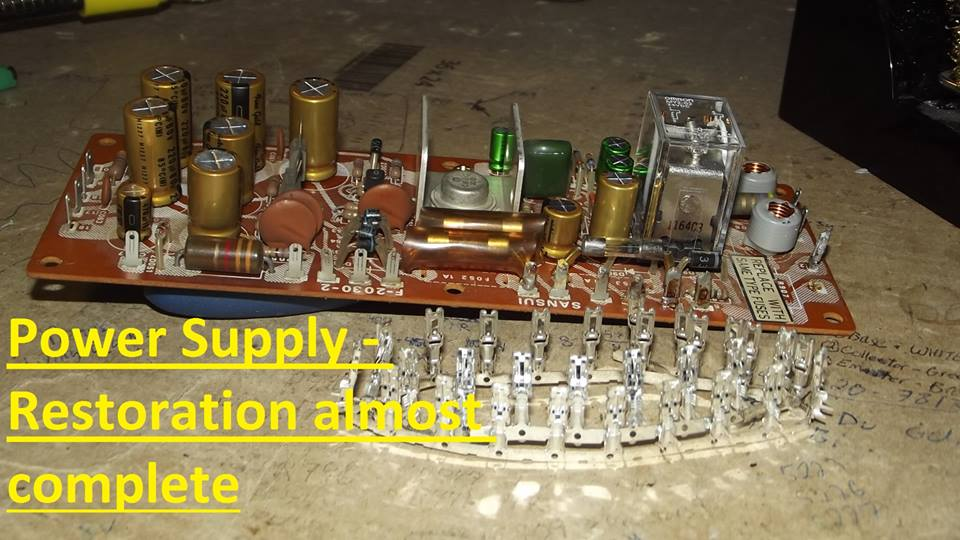
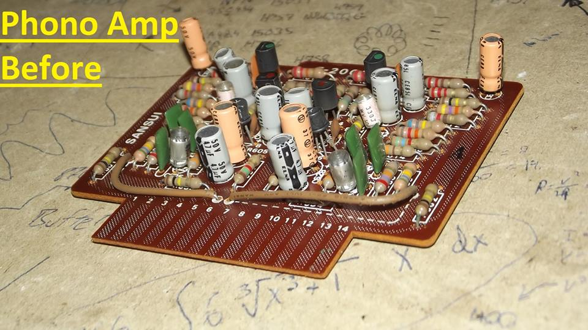
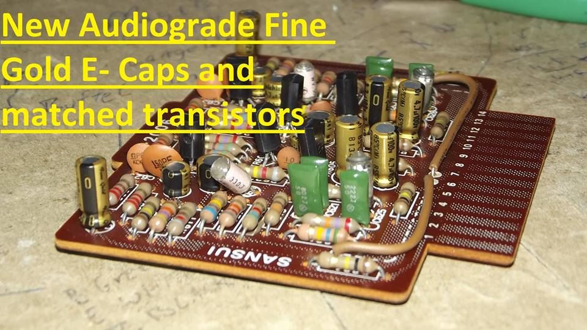
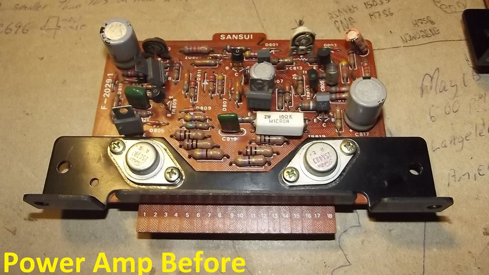
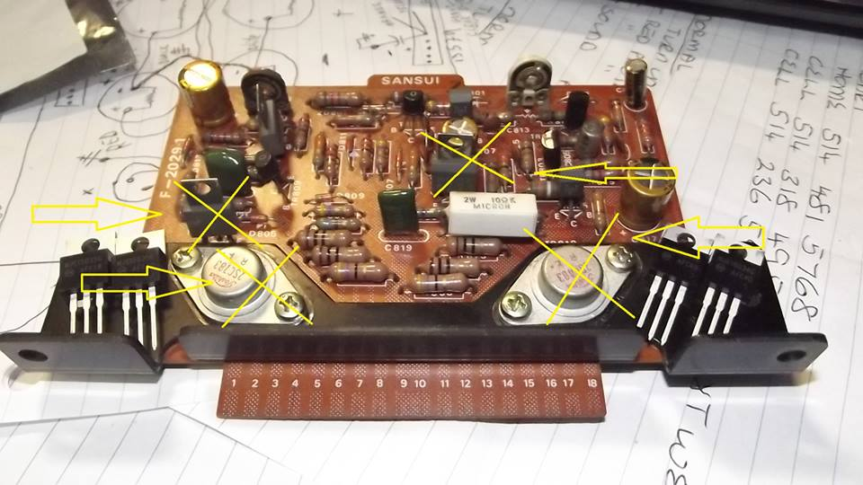
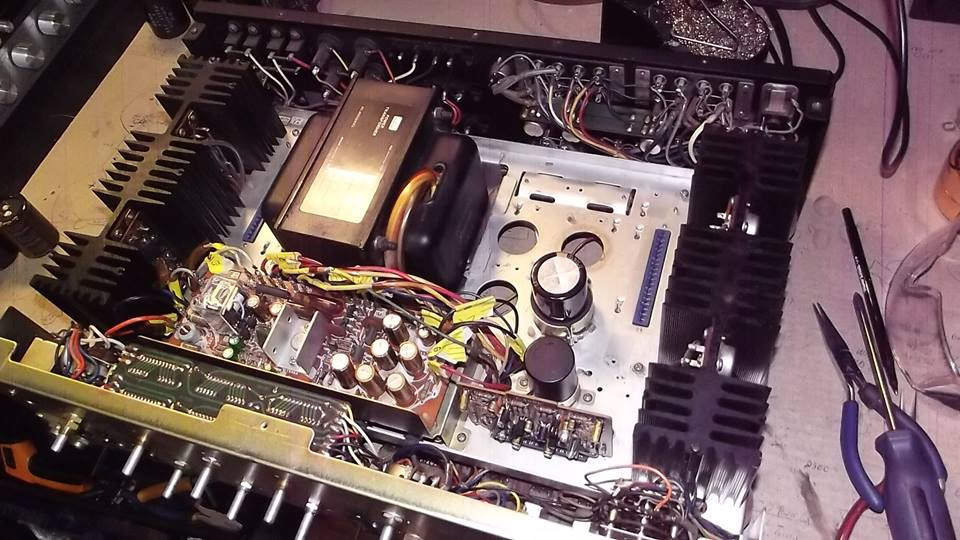
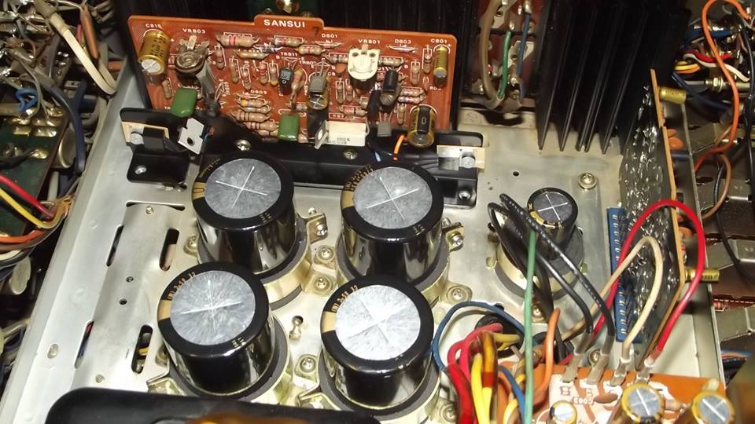
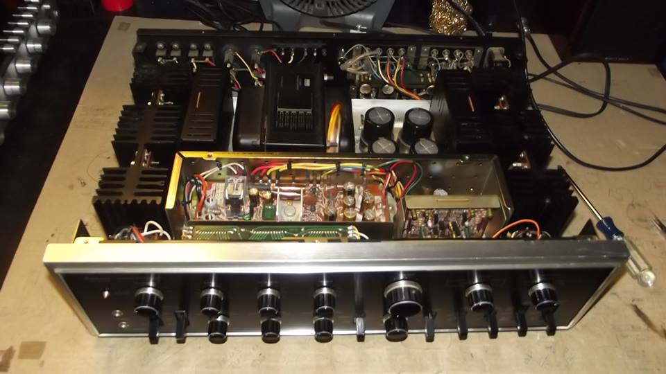

SANSUI AU-9500 STAGE 2 RESTORATION
This is a restoration of a Sansui AU-9500, where all of the electrolytic capacitors were changed, the transistors (preamp and amplifier section), relays, some wires/terminals along with more technical service and proper integration of new parts.
Modern high quality relay and selected audio grade electrolytic capactors installed. Wire wrap replaced with quick connect terminals. The power supply now benefits from improved connection, smoother and cleaner rail voltages and easier access for future maintenance.


Phono section amplifier transistors and electrolytic capactiors replaced for lower noise, lower distortion and better frequency linearity across the audio spectrum.


Power amplifier driver board retrofitted with modern semi-conductors manufactured for premium, high fidelity audio, along with the electrolytic capacitor replacement. The selected transistors work synergistically to add robustness to the amplifier and improve performance on all levels. These parts have better characteristics on every level compared to the original components due to improved technology over the past decades.


Main filter capacitors replaced with the highest quality parts available, specfically designed for premium audio amplifiers. They deliver smoother power with lower distortion.


Re-assembly of amplifier with final adjustments of the DC offset and idle currents (bias).
